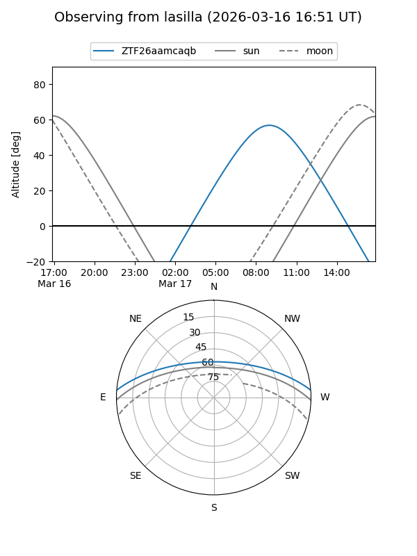
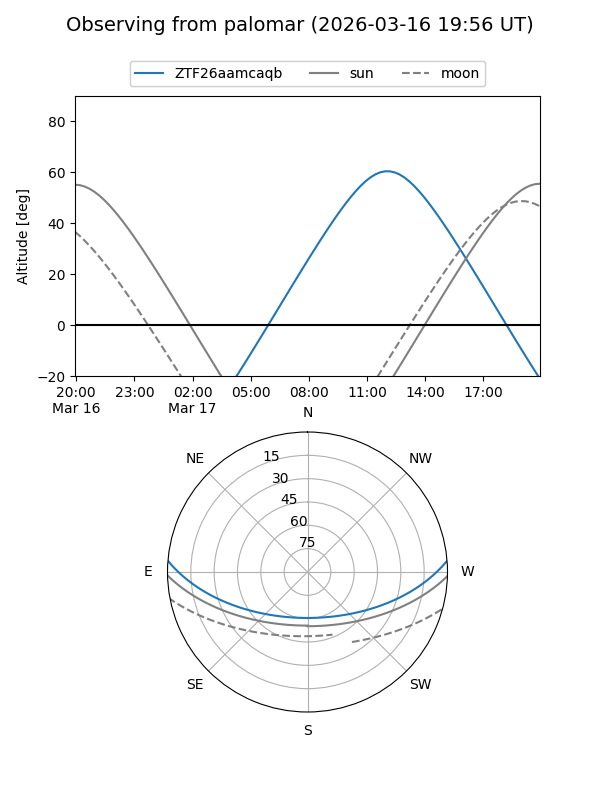

ZTF26aamcaqb
Target ZTF26aamcaqb at 2026-03-16 13:45
Aliases and brokers:
FINK: link
Lasair: link
ALeRCE: link
alt names
ZTF26aamcaqb (ztf,fink_ztf)
Coordinates:
equatorial (ra, dec) = 238.7489,+3.89762
equatorial (HMS+DMS) = 15:54:59.74,+03:53:51.41
galactic (l, b) = (13.2554,+40.46882)
Flags:
Photometry:
last ztfg=17.43
1 ztfg detections
Lightcurve
Visibility


Additional plots